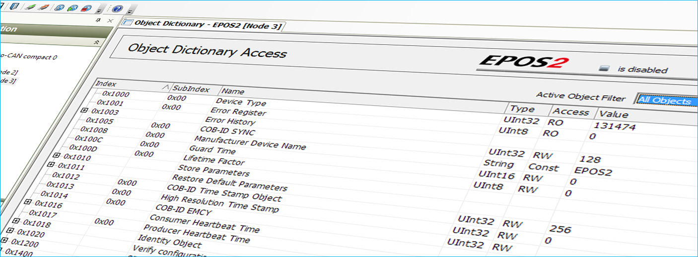

CETONI Nemesys / Qmix Service Guide
With this service guide we want to support you as much as possible in handling the device service or failure cases. Please do not hesitate to contact us in case of any questions or suggestions.
Symbols and Signal Words Used
The following symbols are used in this manual and are designed to aid your navigation through this document:
Tip
Describes practical tips and useful information to facilitate the handling of the device.
Important
Describes important information and other especially useful notes, in which no dangerous or damaging situations can arise.
Attention
Identifies a potentially harmful situation. Failure to avert this situation may result in damage to the product or anything in its proximity.
Caution
Indicates a potentially dangerous situation. Failure to avert this situation may result in light or minor injuries or damages.